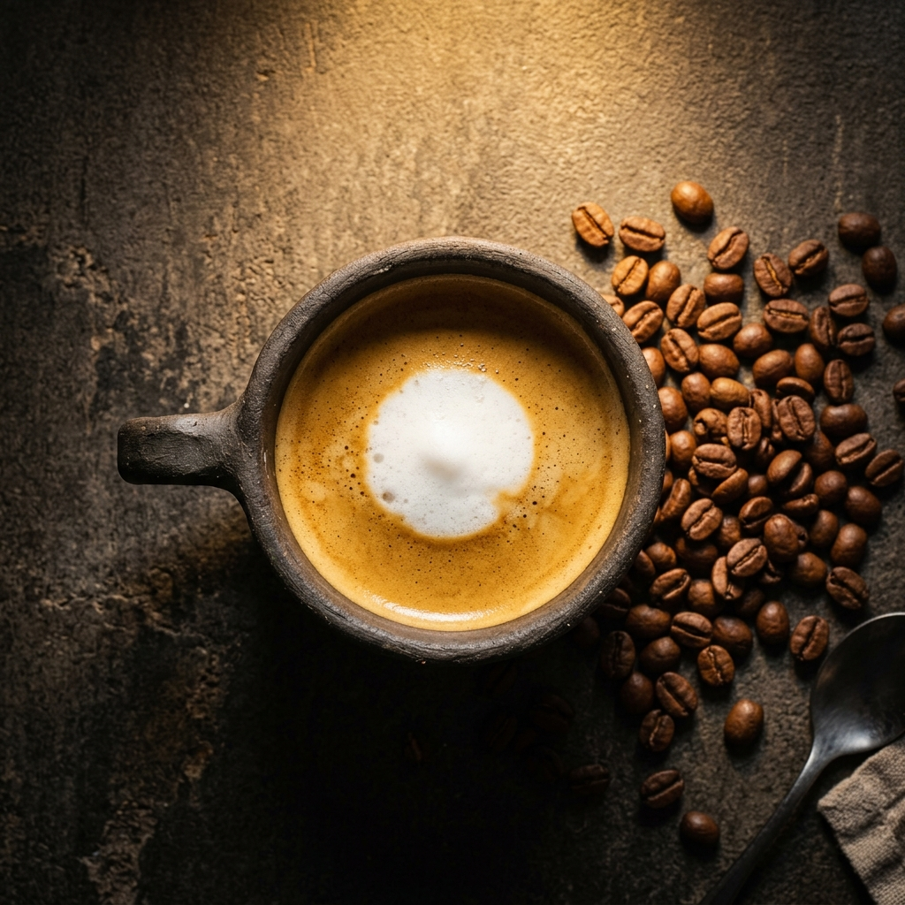
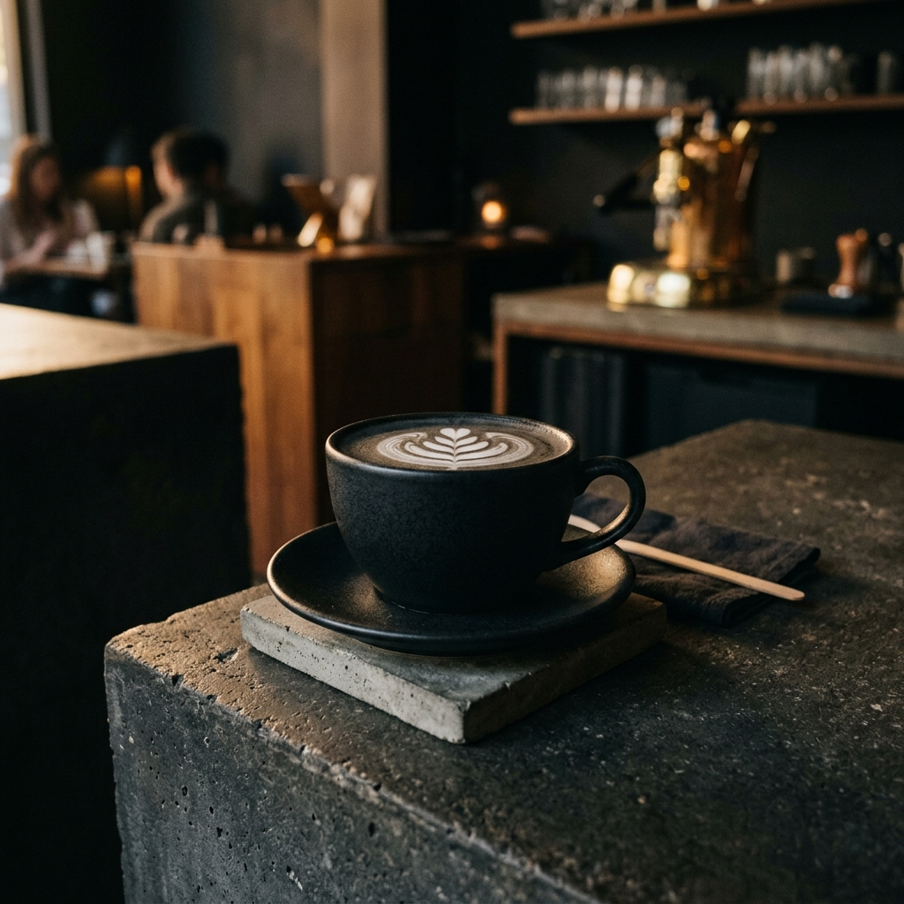
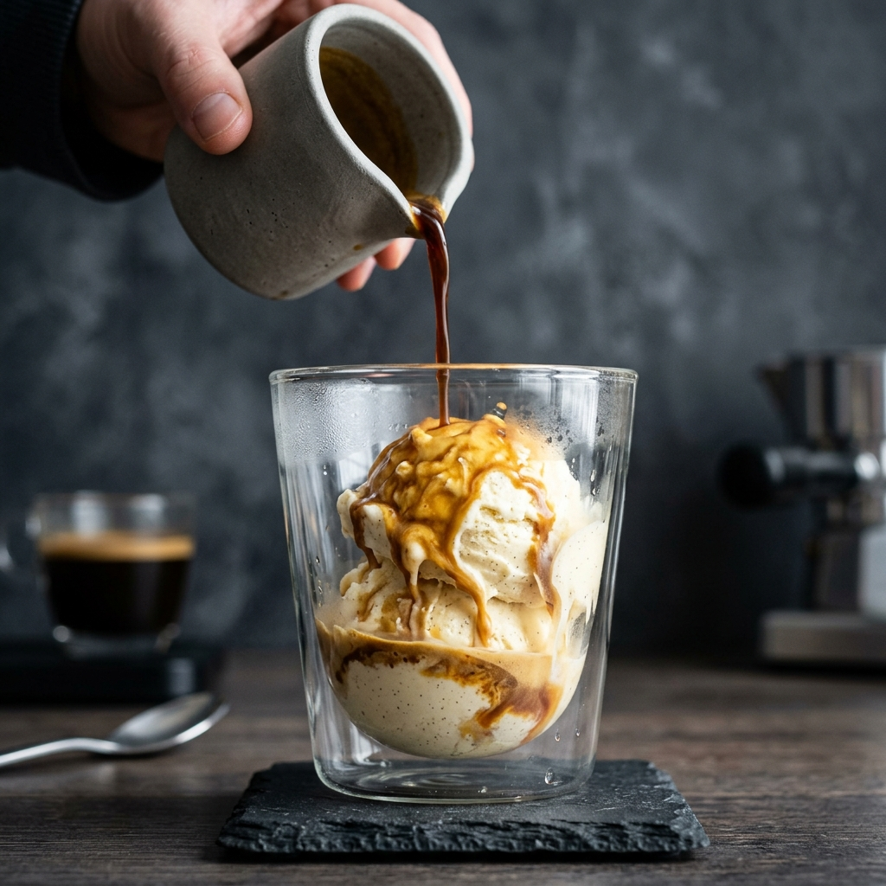
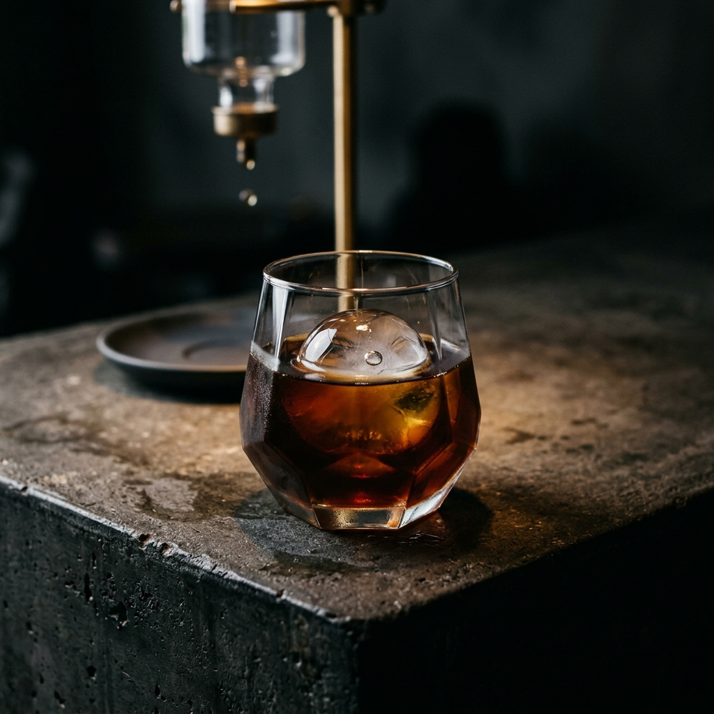

All roasts are pulled on our under-counter Modbar system, mineralized using reverse-osmosis water at 120 TDS, and poured at precise tasting temperatures.

01A single-shot of high-altitude shade-grown Araku Valley espresso marked with a single spot of velvety textured organic oat milk. Balanced notes of dark cacao and wild plum crema.

02A double-shot extraction of double-fermented Baba Budangiri beans, poured over micro-foamed milk infused with organic Kerala cardamom and a splash of raw honey. Smooth, spicy, and earthy.

03A classic Italian delight. A single scoop of rich, creamy Madagascar vanilla bean gelato slowly drowned in a double-shot of hot, concentrated Nilgiris espresso, creating dense golden swirls.

04A double-shot of Nilgiris estate espresso vigorously shaken with ice cubes and organic unrefined Maharashtrian jaggery syrup. Served chilled in a borosilicate glass with a thick, frothy crema head.
Sourced from the Araku Valley. Pulled as a long-extraction Lungo espresso over reverse-osmosis hot water mineralized to exactly 120 TDS, bringing out delicate floral aromas and a smooth, clean cocoa finish.